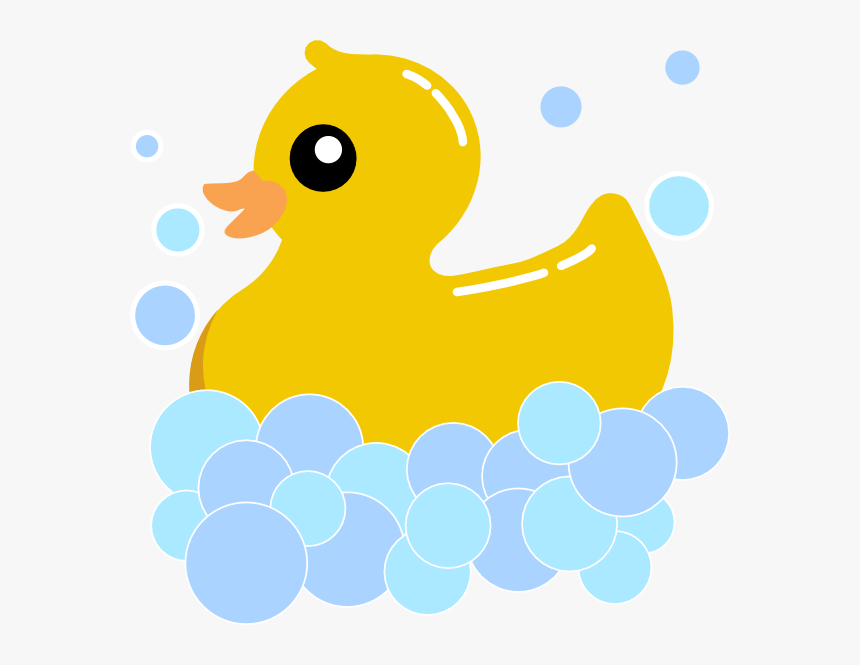

Avery's Digital Resume
Avery Triplett
228-238-5562 | atriplett2020@gmail.com | linkedin.com/in/a-triplett
Education
Bachelor of Science in Electrical Engineering (May 2024)
Mississippi State University, Starkville, MS
GPA: 3.51
Relevant Experience
Lab Mentor - Foundations in ECE (August 2023 - Present)
Bagely College of Engineering, Starkville, MS
- Taught 20 students how to solder and use an Arduino
- Demonstrated how to troubleshoot a circuit board
- Reviewed each student’s work
- Gave guidance to students on how to improve their soldering techniques
Team Lead - A.C.E. (Automatic Candle Extinguisher) (Spring 2022)
Mississippi State University, Starkville, MS
- Created A.C.E. with a budget of $30
- Main line of communication between a team of 5 and the advisor
- Demonstrated A.C.E. to 75 people
- Led team discussions and delegated tasks
Additional Experience
Office Assistant (August 2021 - July 2023)
The Mississippi State University Writing Center, Starkville, MS
- Helped over 200 clients set up accounts and create appointments
- Managed 10 writing consultants and supported 3 faculty
- Created and managed an organization management webpage
Kitchen Staff (April 2019 - May 2021)
The Cypress Taphouse, Ocean Springs, MS
- Delivered food to 30 tables each night
- Hand washed 60 dishes every hour
- Created and managed an organization management webpage
Skills
- OrCAD
- Soldering
- C++
- Solidworks